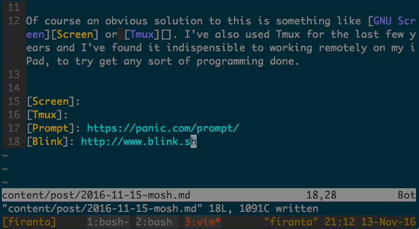

iOS Shells, Prompt vs. Mosh
I’m a big fan of the shell and the productivity it brings, you can have a text editor, command to run a server and more within easy reach. I use a shell at work, at home and on the go. On the go could be using my iPad or iPhone. One of the first SSH clients on iOS was iSSH, which I used many years ago. After this, Panic released a professional class application called Prompt. Prompt is what I’ve happily used for the last few years, but the 10 minute background process limit is a constant pain. Just a quick switch away for a few minutes, and you have to reconnect. That’s fine once or twice, but when it happens many times it seriously slows your productivity.

Of course an obvious solution to this is something like GNU Screen or Tmux. I’ve also used Tmux for the last few years and I’ve found it indispensible to working remotely on my iPad, to try get any sort of programming done. While I love Prompt, and it is a very well designed app, I couldn’t get much done on the go on my home machine over SSH.
That is until I rediscovered Mosh. Mosh is an MIT project that redesigns the shell for the 21st Century (unreliable mobile internet connections). I’d seen this project a few years back, but it had no mobile (Android or iOS) client at that stage and was purely experimental. It now has very wide platform support, including a new(-ish) iOS app called Blink. The major benefit of mosh is that it doesn’t need root to install, uses existing SSH connections to set itself up and doesn’t need a constant connection. This differs hugely from Prompt in terms of usability, no more 10 minute session timeouts, you reconnect instantly using a very efficient UDP protocol Mosh uses (on a port between 60,000-61,000). It all just feels very effortless.
That said, there are still issues around scrollback buffer and connecting to multiple sessions with Tmux. Scrollback sometimes gets garbled with Mosh/Blink, and it is a known issue of Mosh. Also Tmux sizes itself based on the client which connects, which is fine if you connect with one device. Connect with multiple devices of different resolutions (phone, tablet, laptop) and you’ll see wasted space abound. So while the potential of Mosh is still great, I still feel it is in the early adopter phase. If you like the future and can handle the rough edges, definitely give it a shot.